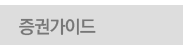
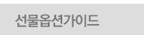
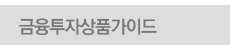
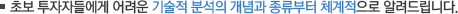
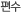
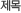
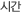
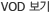

차트가이드




1
알면 쉬운 증권 첫걸음
증권의 정의와 종류, 주식과 채권의 차이 이해
주식회사, 주주, 주식, 배당의 개념
증권시장의 역할(기업적, 개인적, 국가적 측면)
코스피, 코스닥 시장의 구분
5분 35초
1
증권계좌 개설과 활용
증권계좌 개설 방법과 절차 안내
CMA의 기능
HTS(Home Trading System)를 활용한 주식거래 방법
주식거래 이외의 HTS를 활용한 다양한 기능 소개
5분 35초
1
증권정보 100배 활용하기
증권정보 활용1 - 거시경제 흐름을 읽어라
증권정보 활용2 - 해외 증시 놓치지 마라
증권정보 활용3 - 산업의 흐름이 중요하다
5분 35초